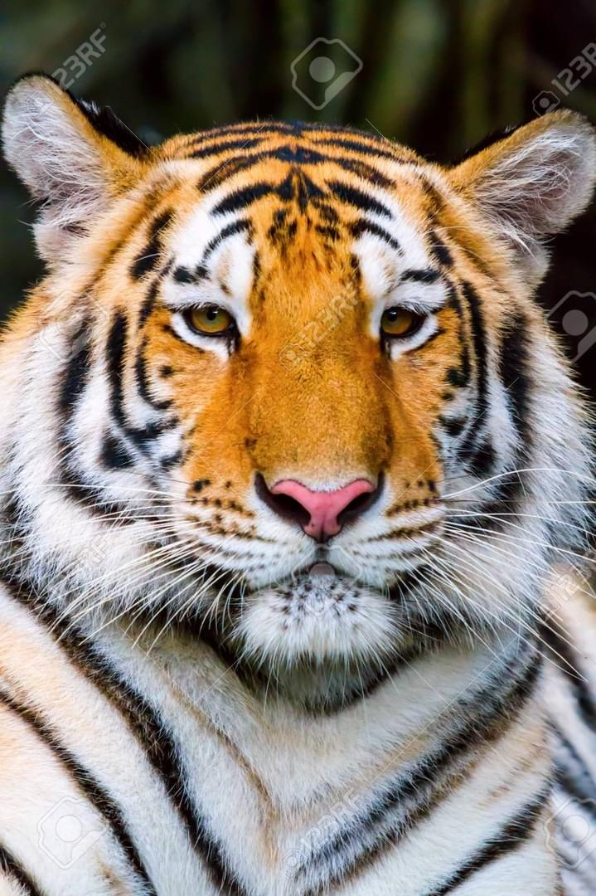
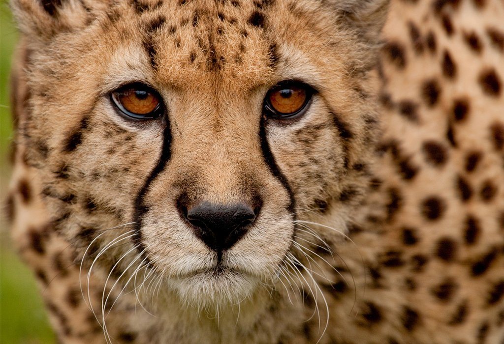
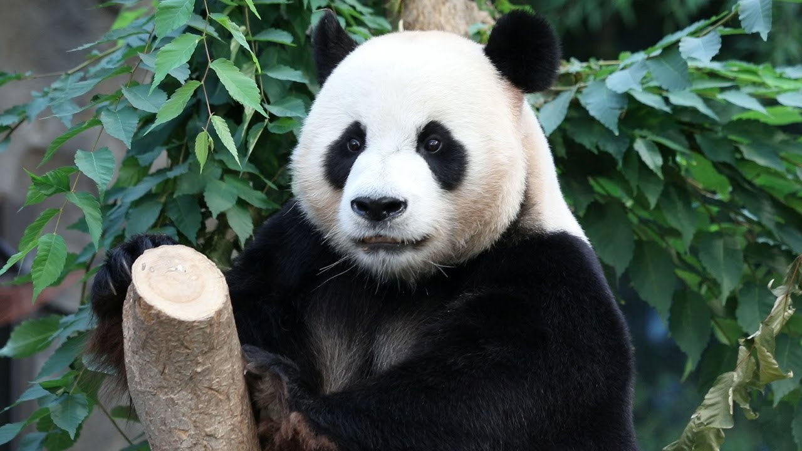
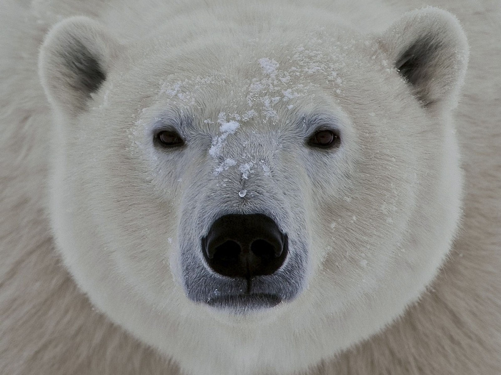
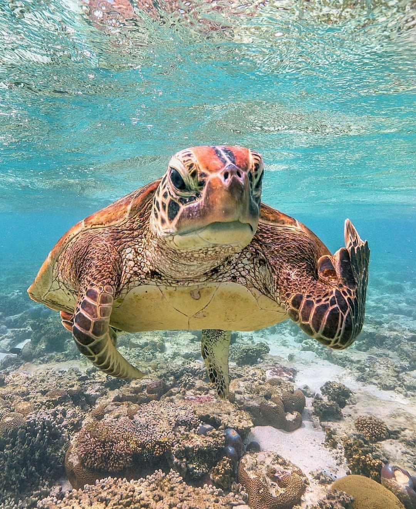

뱅갈 호랑이(bengal tiger)
인도와 그 주변국들에 서식하고 있는 호랑이의 아종.
'벵갈 호랑이, 인도 호랑이'라고도 한다.
시베리아 호랑이와 달리 고동색 줄무늬에 황색 털가죽이 조금 더 짙은색이다.
몸 안쪽 부위는 하얀색이며, 꼬리는 검은 고리가 끼어있는 주황색이다.

아프리카 치타(african cheetah)
고양이과 동물의 일종. 지상에서 가장 빠른 생물이다.
어깨높이 약 64~90cm, 몸길이 약 1~1.5m,
꼬리길이 약 60~80cm, 몸무게 20~55kg로 표범보다 작다.
다른 식육목 동물과 달리 유일하게 식육목 생물들 중 주행성으로, 낮에 사냥하고 밤에 잠을 잔다.

판다(Panda)
중국 쓰촨성 일대에 주로 서식하는 포유류 동물.
판다곰이라는 이름답게 곰과 판다속 대왕판다종이다.
원래는 곰과가 아니라 미국너구리과라고 알려져 있었지만,
새로운 화석의 발견과 유전자 연구를 통해 곰의 일파임이 밝혀졌다.

북극곰(Polar bear)

바다 거북(Turtle)
넓은 의미로 거북목 바다거북상과(Chelonioidea)에 속하는 모든 종들의 총칭.
좁은 의미로는 바다거북상과의 하위 분류군인 바다거북과(Cheloniidae)에 속하는
모든 종들의 총칭이다.
특정 종을 가리킬 때는 푸른바다거북(Chelonia mydas)을 의미한다.
동물 사진을 누르면 각 설명페이지를 볼 수 있습니다.